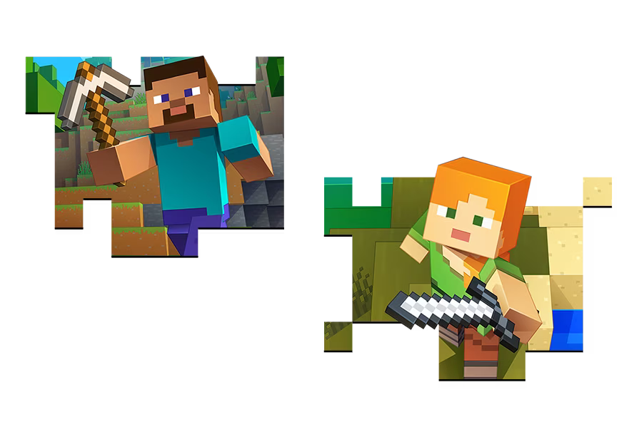
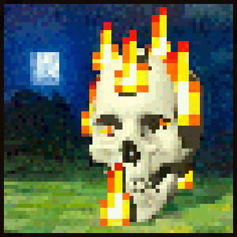
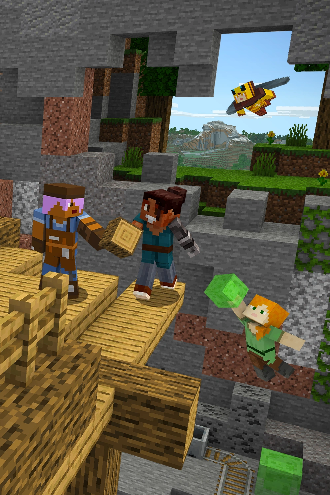
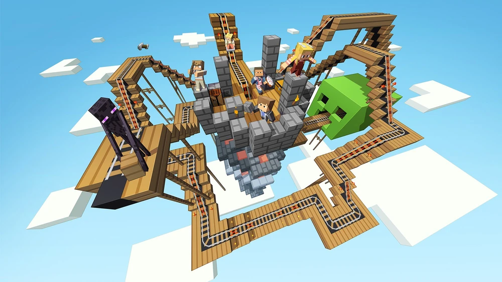
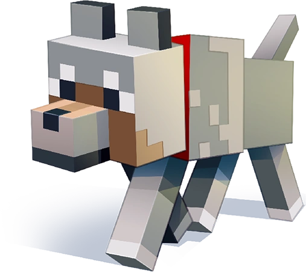
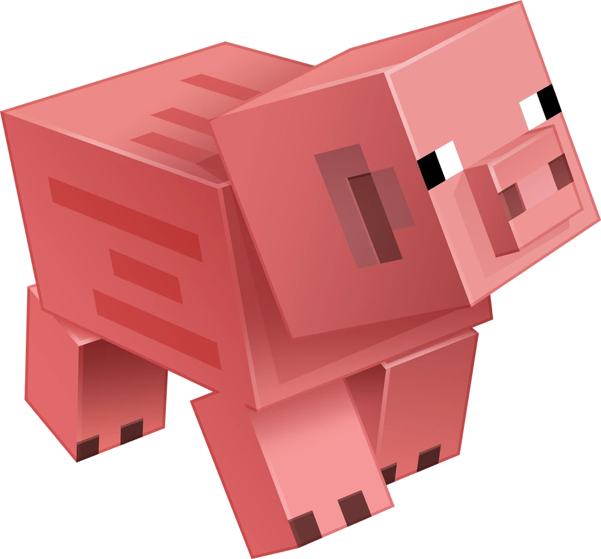

...Porque Minecraft?
Minecraft es un juego increíblemente interesante por una variedad de razones, algunas de las cuales incluyen:
Creatividad ilimitada: Minecraft ofrece a los jugadores un mundo completamente abierto y sin límites donde pueden construir casi cualquier cosa que puedan imaginar. Desde simples casas hasta enormes ciudades, el único límite es la imaginación del jugador.
Exploración infinita: El mundo de Minecraft es generado aleatoriamente y es prácticamente infinito, lo que significa que siempre hay algo nuevo por descubrir. Desde biomas exóticos hasta estructuras generadas aleatoriamente, cada nueva área explorada ofrece una experiencia única.
Modificable: Minecraft es altamente modificable, lo que significa que los jugadores pueden instalar modificaciones (mods), packs de datos o texturas y mucho mas para cambiar o mejorar el juego según sus preferencias. Esto amplía aún más las posibilidades y la longevidad del juego.
Juego educativo: Minecraft ha demostrado ser una herramienta educativa poderosa, utilizada en entornos escolares para enseñar matemáticas, historia, ciencias y más. Los jugadores pueden aprender sobre la arquitectura mientras construyen, la geología mientras excavan y la lógica mientras diseñan circuitos.
Comunidad activa: Minecraft tiene una enorme comunidad de jugadores en línea que comparten creaciones, mods, consejos y trucos. Esta comunidad activa crea un sentido de pertenencia y ofrece infinitas oportunidades para interactuar y colaborar con otros jugadores.
Aventuras y desafíos: Minecraft ofrece varios modos de juego, incluidos el modo supervivencia y el modo creativo. El modo supervivencia desafía a los jugadores a sobrevivir en un mundo hostil, enfrentándose a monstruos y buscando recursos, mientras que el modo creativo les permite construir libremente sin restricciones.
Actualizaciones regulares: Mojang, la compañía detrás de Minecraft, continúa lanzando actualizaciones periódicas que agregan nuevas características, biomas, criaturas y mecánicas de juego. Esto mantiene el juego fresco y emocionante incluso para jugadores veteranos.
Multiplataforma: Minecraft está disponible en una amplia variedad de plataformas, incluyendo PC, consolas de videojuegos, dispositivos móviles y más. Esto permite a los jugadores acceder al juego desde casi cualquier lugar y jugar con amigos independientemente de la plataforma que utilicen.
Link a la Wiki de Minecraft
 